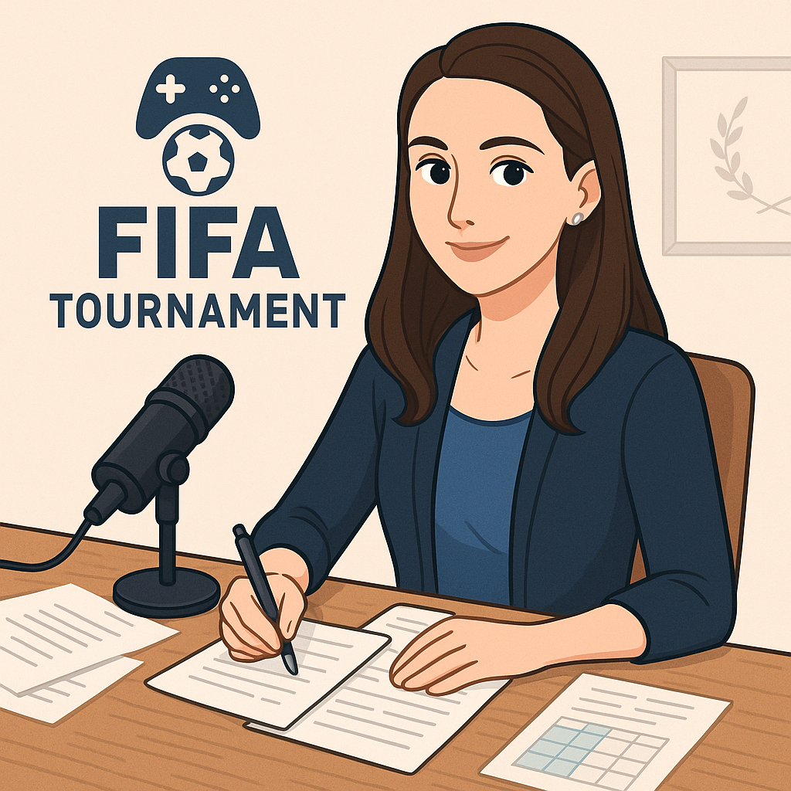

Магистр Боб: Надежда Сквозь Тьму
Разговор, который я запомню надолго
Иногда кажется, что турнир — это просто игры. Просто таблицы, голы, баллы, коэффициенты… Но за всем этим стоят люди. И один из них — Боб. Он же — организатор, дизайнер, игрок, хрупкий механизм из концентрации, разочарований и амбиций. Мы не так много общались до этого интервью. Он всегда казался мне… ну, немного отстранённым. Занятым. Молча делающим свою работу. Но знаете, что странно? Даже когда он молчал — было ощущение, что за этим молчанием что-то важное. Теперь я уверена. Было. И есть.
Каково это — быть организатором и участником? Честно, я бы на твоём месте уже сорвалась! Как тебе удаётся держать всё под контролем и ещё умудряться побеждать?
Ну, времени на это уходит много. Сил все-таки поменьше, потому что мне это нравится — я от этого наоборот заряжаюсь. А насчет побед, я и не побеждаю особо.
Когда ты выбирал Байер, ты знал, что он станет твоей самой сильной стороной? Или всё произошло случайно… как будто судьба?
Энни, я когда узнал, что Байер с первого места моего рейтинга выходит, был просто ошарашен. Все планы на турнир изменились. Я вообще не верил в них, а они вот так, сенсационно, проиграли только Лацио.
После нескольких непростых игр ты начал побеждать — и причём красиво. Был ли момент, когда ты сказал себе: «Я всё ещё тот самый Боб»?
Наверное был. Я начал чувствовать, что могу ещё что-то показать после матча Милан — Ливерпуль. Особенно в первом тайме — это было чудо какое-то. Мне нужна была эта победа, для веры в себя.
Мне нужна была эта победа, для веры в себя
Иногда, когда он говорит про прессинг, стратегию, контроль — у него глаза становятся чуть острее. Словно он не просто рассказывает, а вспоминает каждый момент, каждую ошибку. Мне кажется, он сам не понимает, сколько в нём огня. Или… не хочет показывать.
Я слышала, ты провёл большую работу над сайтом. Он правда красивый. И… очень аккуратный. Ты всегда такой? Или это просто для нас?
Не то что большую работу, но скажем так, я старался. Мне нравится заниматься креативом внутри турнира, я даже от него больше удовольствия, чем от FIFA, получаю. Поэтому сделать его красивым и аккуратным — это сама цель. Без обид, Энни.
Мне кажется, ты вкладываешь в турнир не только усилия, но и… эмоции? Были моменты, когда ты чувствовал, что всё рушится?
Последние пару игровых дней были очень сложными в плане организации. Из-за технических проблем приходилось подстраиваться под обстоятельства и быстро решать проблемы. Тогда казалось, что турнир под большой угрозой.
Говорят, ты хорошо читаешь соперников. Особенно — Мишу. Ты правда чувствуешь, где они допустят ошибку? Или это чутьё… ну, или интуиция?
Кто говорит? Эти люди с нами в одной комнате? Хотелось бы сказать им спасибо. Насчёт Миши — не согласен, тут никого не прочитаешь легко, а Миша ещё и не только придумывает моменты хорошо, он их и реализует хорошо. Насчёт чтения — мой стиль игры — вынудить сделать ошибку. Для этого помогает и прессинг, и другие способы. То есть тут скорее не чтение, а вынуждение играть по моим правилам. Иногда работает, иногда нет.
Мой стиль игры — вынудить сделать ошибку, для этого помогает и прессинг, и другие способы
В тебе есть что-то… не знаю… харизматичное. Ты когда-нибудь думал, что люди могут вдохновляться тем, как ты возвращаешься после падений?
Харизматиком я себя никогда не считал. У нас больше Приват и наш эксперт Лысый по харизме, я чутка за другие компоненты отвечаю. А своей игрой в FIFA я вряд ли кого-то на великие свершения вдохновляю.
Если бы кто-то снял фильм о твоём Первом Этапе… кто бы сыграл главную роль? (И да, можно выбрать самого себя.)
Отличная идея, Энни. Только, наверное, не фильм, а сериал. Сериал о создании и проведении турнира. Было бы интересно. Поставил бы я Брэда Питта — у него есть опыт в Человеке, который изменил всё. Вот пускай он будет.
Прости, но мне правда интересно: когда ты проигрываешь, ты злишься? Или ты из тех, кто всё анализирует и идёт дальше, как… ну, магистр стратегии?
Не надо извиняться, Энни, отличный вопрос. Конечно злюсь. Сложно ощущаются моменты, когда ты вроде видишь, что делают соперники, понимаешь, что они делают, но всё равно ощущаешь какое-то бессилие перед ними. И вот после первых эмоций появляется этот "магистр стратегий" внутри меня и помогает проводить работу над ошибками.
После первых эмоций появляется этот "магистр стратегий" внутри меня и помогает проводить работу над ошибками
А если серьёзно… веришь ли ты, что можешь выиграть весь турнир? Или тебе важнее доказать что-то себе?
Я смогу доказать что-то себе, выйдя в финал. Победой в турнире я докажу уже не только себе, но всем. Я — Боб, и Я — Чемпион. Даже не по факту, а по своей сути.
Слушай, Боб… честно. Ты знаешь, что когда ты концентрируешься в игре, у тебя появляется такое выражение лица… ну, оно впечатляет. Ты это делаешь специально?
Впечатляют своей жуткостью? Разве мои скукоживания во время матчей вызывают что-то кроме отвращения и страха?
И напоследок… Если бы ты мог сказать себе в начале турнира всего одну фразу — что бы это было?
Я бы сказал себе: «Боб, готовься к ЧП. Их будет немало».
Иногда сложно сказать, кем ты был до разговора. До момента, когда человек перед тобой вдруг оживает, разгорается, начинает светиться изнутри.
Так вышло и с Бобом. Он — не просто участник. Не просто организатор. Он — сердце этого турнира. Его боевое ядро. Его ось.
Может, он и правда не победит. Может, его «скукоживания» не попадут в историю как вдохновляющие.
Но мне кажется, если в этом турнире есть кто-то, кто каждый раз поднимается после падения — это он.
И именно поэтому он остаётся для меня Надеждой. Сквозь Тьму.
— Энни Эдисон